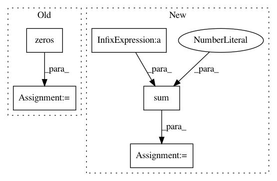

58ec59639a00d0bf885968dd885aaba610ece6d5,autosklearn/metrics/classification_metrics.py,,bac_metric,#Any#Any#Any#,62
Before Change
:return:
label_num = solution.shape[1]
score = np.zeros(label_num)
bin_prediction = binarize_predictions(prediction, task)
[tn, fp, tp, fn] = acc_stat(solution, bin_prediction)
// Bounding to avoid division by 0
eps = 1e-15
After Change
if (task != MULTICLASS_CLASSIFICATION) or (label_num == 1):
tn = np.sum(np.multiply((1 - solution), (1 - bin_prediction)),
axis=0, dtype=float)
fp = np.sum(np.multiply((1 - solution), bin_prediction), axis=0,
dtype=float)
tn = sp.maximum(eps, tn)
neg_num = sp.maximum(eps, tn + fp)
tnr = tn / neg_num // true negative rate (specificity)
bac = 0.5 * (tpr + tnr)
In pattern: SUPERPATTERN
Frequency: 3
Non-data size: 5
Instances
Project Name: automl/auto-sklearn
Commit Name: 58ec59639a00d0bf885968dd885aaba610ece6d5
Time: 2016-01-22
Author: feurerm@informatik.uni-freiburg.de
File Name: autosklearn/metrics/classification_metrics.py
Class Name:
Method Name: bac_metric
Project Name: automl/auto-sklearn
Commit Name: 6015fd1cfb176a4f98404f3b943e88940f2de90a
Time: 2016-01-19
Author: feurerm@informatik.uni-freiburg.de
File Name: autosklearn/metrics/classification_metrics.py
Class Name:
Method Name: bac_metric
Project Name: LCAV/pyroomacoustics
Commit Name: 216fad967ebd8e0df284e2f0e961519321b7a52b
Time: 2019-02-06
Author: ebezzam@gmail.com
File Name: pyroomacoustics/beamforming.py
Class Name: Beamformer
Method Name: process